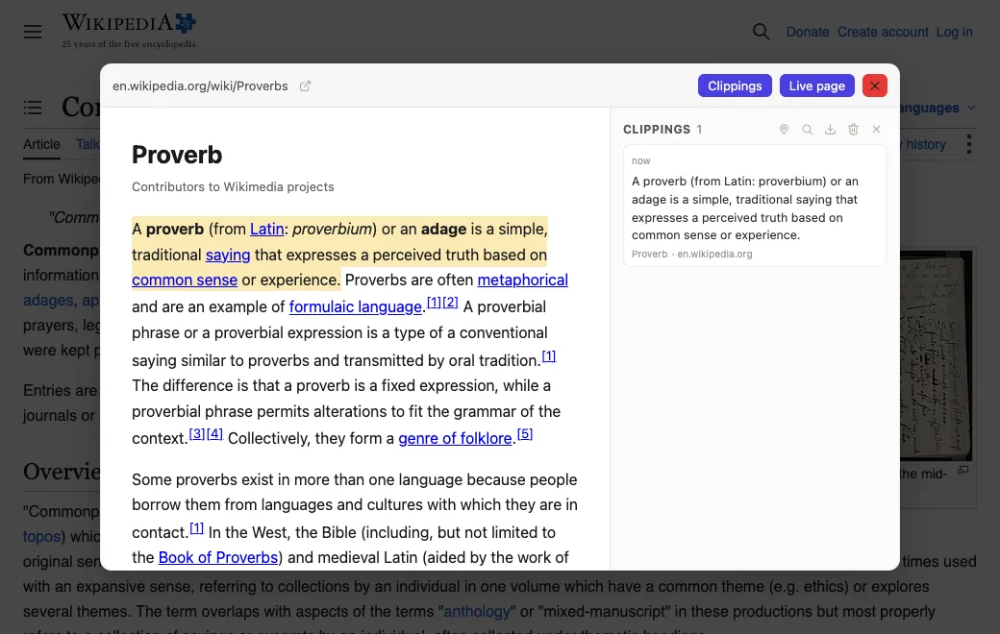
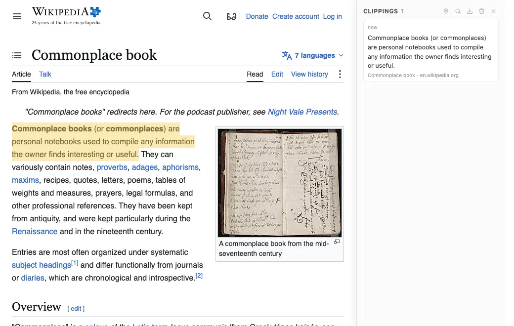

Piko needs to be allowed on the pages you readPiko is allowed on the pages you read
Piko waits for you to drag a hyperlink. To notice that, it has to already be running on the
page you are reading. That is why it asks once, for every site, instead of asking each time
you open one.
Chrome will ask you to confirm. Nothing happens until you do. You can take the permission
back at any time from chrome://extensions.
You can take that back at any time from chrome://extensions.
Sites Piko stays off
Try it
Reading is easy with Piko! Piko is a scrapbook that works in your browser. Click on
this Wikipedia page
and let me teach you how to use Piko!
On the
Wikipedia page, try dragging a link to activate Piko's preview mode!
In the preview, try hovering your mouse over each sentence as you read. When you find
the sentence that summarizes the article, click on that sentence to clip it!
What a dragged article looks like

If you want to group multiple sentences, try Shift click!
Press Esc, the red ✕, or the background of the preview to go back to the
main page.
You can clip sentences on the main page too! Click the
puzzle
piece icon on your browser, then
pin the
Piko extension. Try clicking on
Piko!
What to look for
Finally, try clipping a sentence on the main page!
What the docked journal and a kept sentence look like

A few things that might surprise you
Piko does not run on its own pages, so dragging a link on this one does
nothing. Every step above happens on the Wikipedia page.
Dragging a link puts the page's own clipping away. Press Piko's icon again whenever
you want it back.
A tab you already had open before allowing Piko needs a reload first. Piko can only
get into a page while that page is loading.
What Piko does with access to the pages you read
Notices a dragged link and fetches that page, so it can show you the article in reader
mode.
Reads the text of a page only after you drag a link or press the icon. Until then it
adds nothing to the page at all.
Saves a sentence to your journal when you click it. That journal stays on this device.
What Piko will not do
Run on webmail, password managers, chat, or sign-in pages. Chrome blocks Piko there. It
is not Piko policing itself.
Send cookies when it fetches a page. It never sees a signed-in version of anything.
Reach addresses on your own network: your router, your office intranet, anything running
on your own machine.
Send anything anywhere. There is no account, no analytics, and no server.
Piko is free and open source. If you would rather allow it on a few sites instead of all of
them, you can do that from chrome://extensions. Piko will work on the sites you
choose and do nothing anywhere else.
This page is also Piko's options page. Right-click
and choose
Options to read it again.